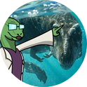
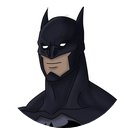
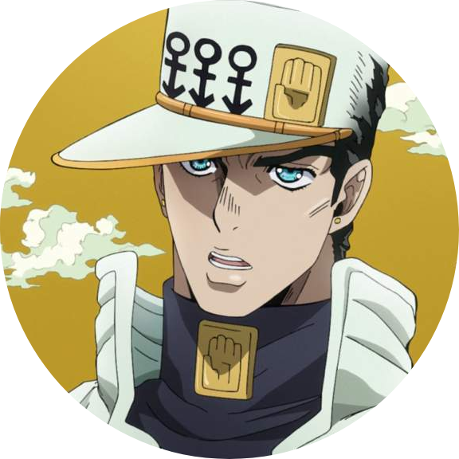

¿Quienes somos?
Somos una comunidad de habla hispana que comparte el interés sobre el mundo prehistórico y la paleontología la cual se ha juntado para crear una serie de historias acerca de un lore común.
¿Qué hacemos?
Somos una comunidad pequeña pero activa. Tenemos muchas historias y paleoarte dedicado a nuestro lore. ¿De que se trata? En resumidas cuentas, se basa en el supuesto de que un grupo de investigadores hubiera creado un parque en el futuro debido a un portal que permitía viajar al pasado.
Miembros destacados

Profesor Simosuchus
fundador

Máximo
Cofundador y miembro de importancia

Ikernatural
Miembro destacado
¿Dónde nos puedes encontrar?
Nos puedes encontrar en la mayoría de las grandes plataformas digitales, aunque nuestra sede principal es Amino.
Tres estilos de botones porque puedo y porque quiero
Visita nuestra Comunidad de Amino Visita nuestra Comunidad de Amino Visita nuestra Comunidad de Amino